Orchestrate with Dify. Infer locally on AMD Radeon.
Dify is built in public by a global open-source community—across the core platform, plugins, documentation, examples, and shared practice.
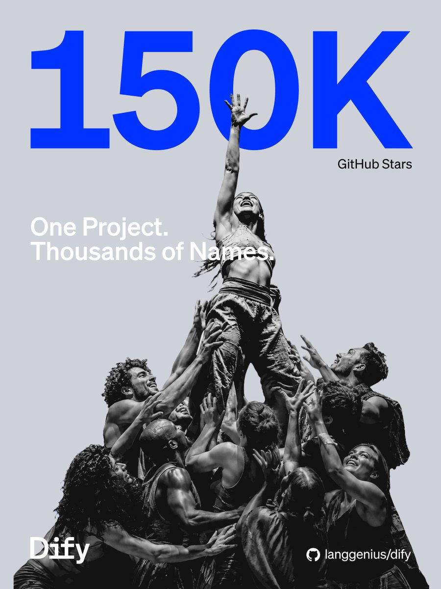
Design how an application reasons, retrieves data, makes decisions, and uses approved tools—then test and hand off the same visual execution path.
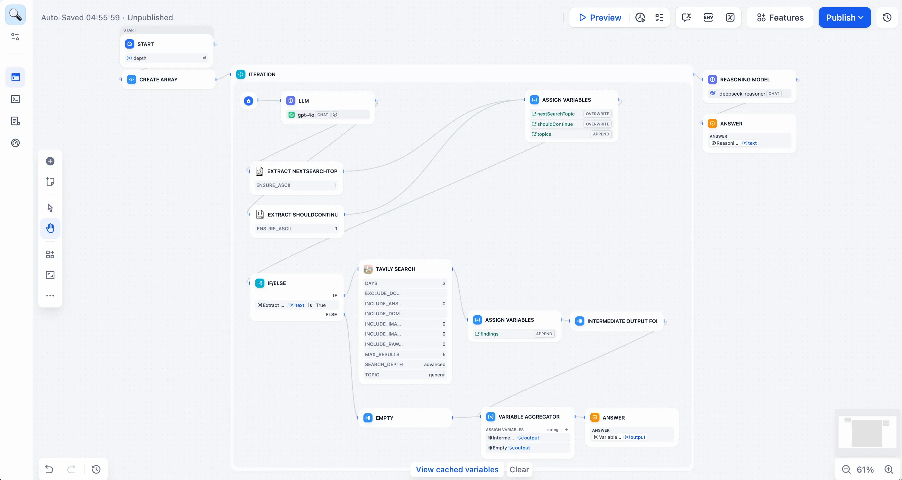
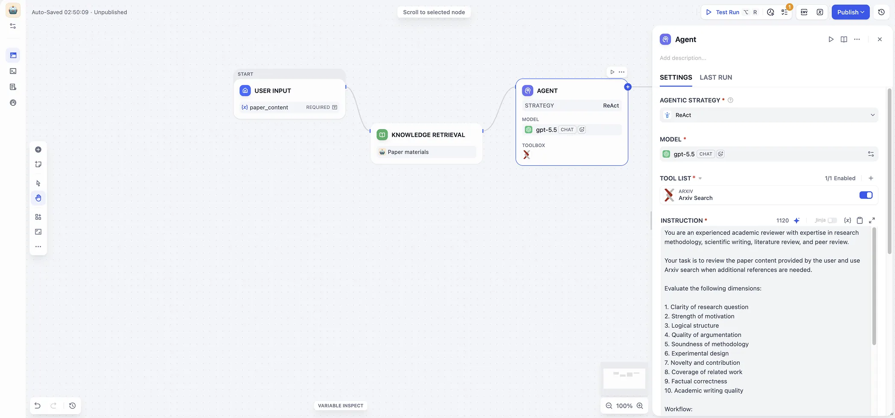
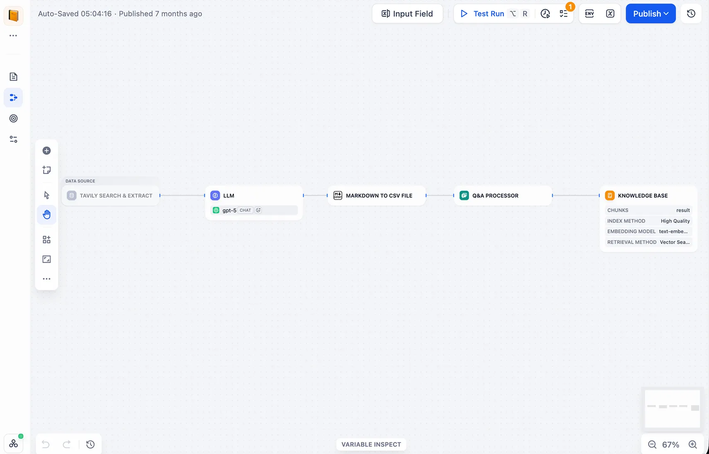
Files, websites, online documents, and connected drives.
Control processing and test retrieval before production.
Connect one knowledge base to agents and workflows.
Reuse approved models, tools, data sources, and integrations—then publish the same logic and learn from real execution data.
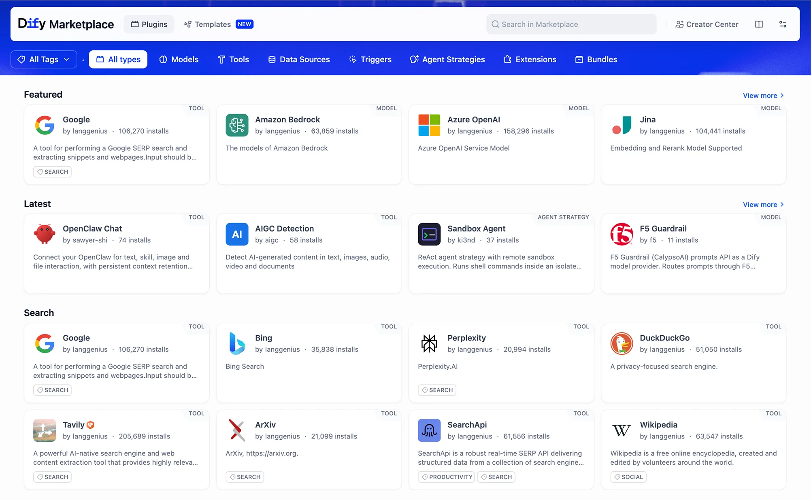
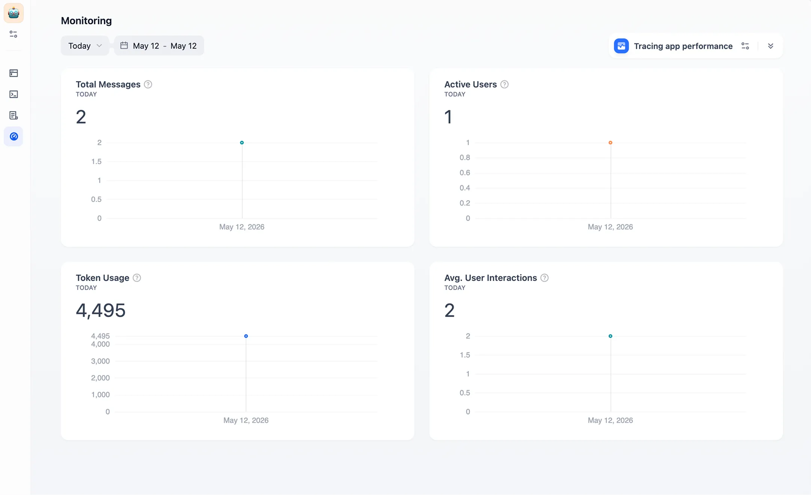
Reason, plan, use tools, manage memory, and finish a real task—then prove local execution on AMD Radeon.
Can the agent take a goal and finish a meaningful task?
Run inference locally—and explain how you made it faster.
A task enters Dify, calls the local model on Radeon when needed, then returns to the workflow for verification and delivery.
Goal, private data, permissions, and completion criteria
Understand · plan · retrieve · use tools · verify
Run the model with ROCm while data stays in the controlled environment
Answer, action, sources, and execution trace
Optional first step:git clone https://github.com/langgenius/dify.git
cd dify
cd docker
cp .env.example .env
docker compose up -dLemonade runs models on AMD GPUs and NPUs behind an OpenAI-compatible endpoint.
lemonade status
lemonade run Gemma-4-E2B-it-GGUF \
--llamacpp rocmThe official model provider connects Dify to a Lemonade Server running on your AMD machine.
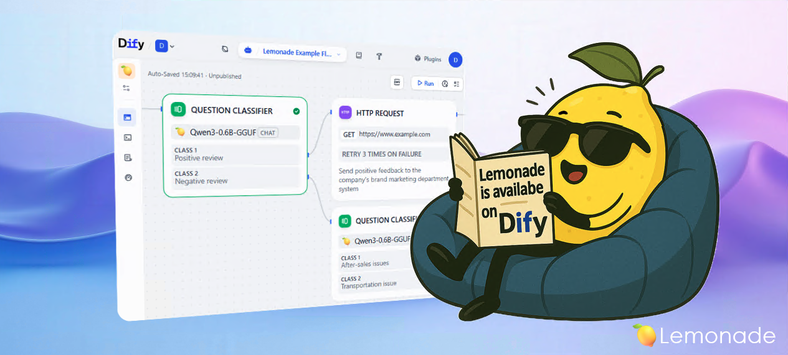
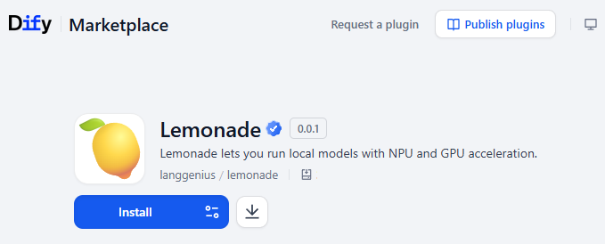
Choose the provider, point it at the reachable Lemonade endpoint, then select the local model inside your Agent or Workflow.
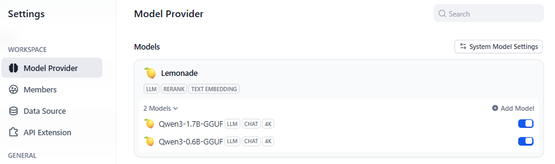
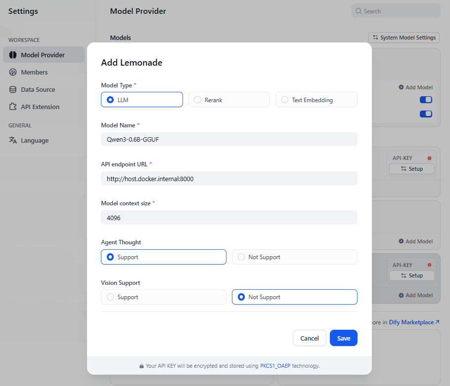
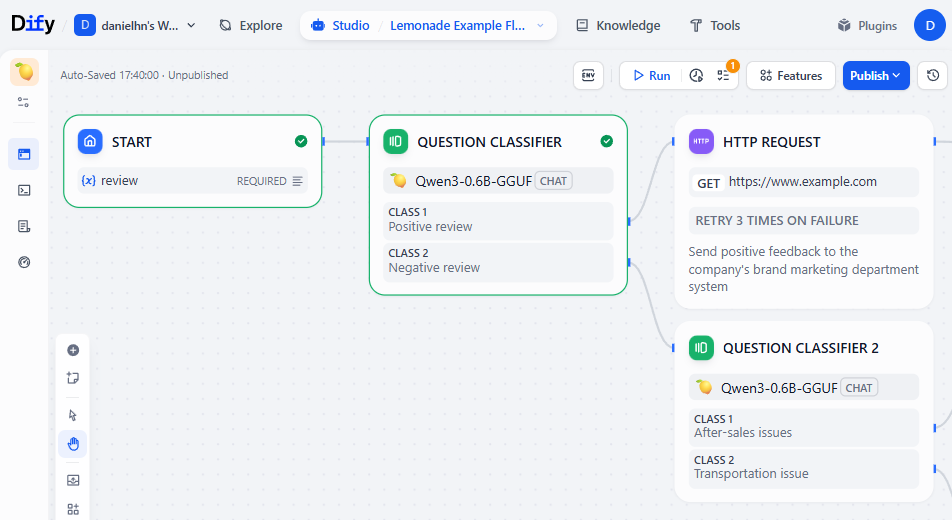
localhost.
Data stays local. Dify retrieves and orchestrates; Lemonade runs inference on Radeon.
Find this week's unfinished tasks. Return owner, due date, and risk. Mark missing facts as “Needs confirmation”—do not invent them.
Do not stop at a fluent answer. Put planning, tools, memory, and verification into the workflow.
User goal, private context, permissions, and done criteria
Read local knowledge and memory, then choose the next action
Invoke the ROCm-backed local model and capture speed and VRAM
Use tools and check the result, sources, and constraints
Finish—or ask for input, re-plan, or exit safely
Scan to register for the AMD AI DevMaster Hackathon, choose Track 2, and build a locally deployed agent with Dify and Radeon.